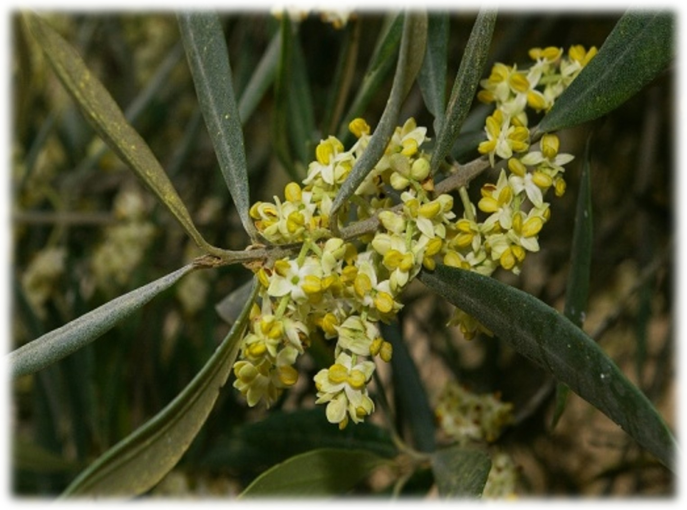
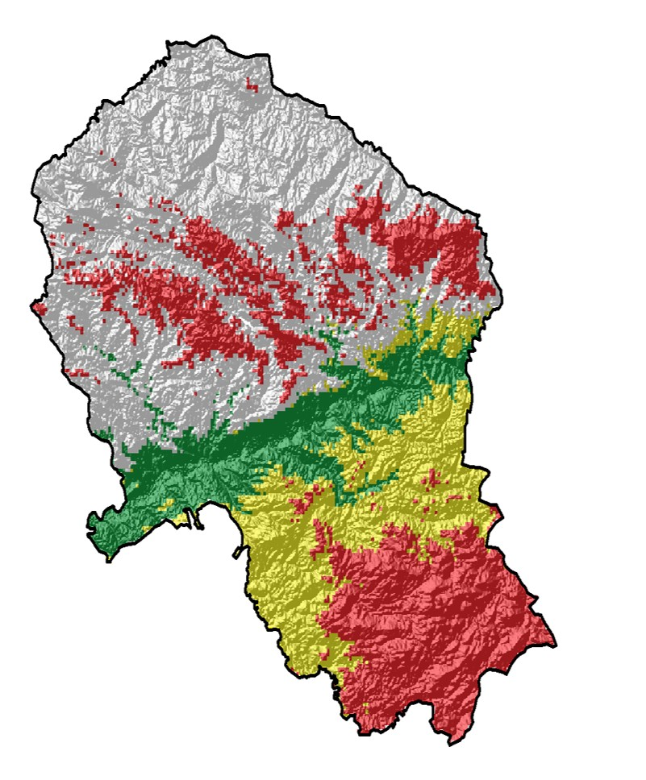

PheMPOlive (PID2023-152718OA-I00)
Modelización fenológica y automatización del muestreo polínico para una predicción temprana y sostenible de la producción de aceite de oliva.
Objetivo. Integrar fenología, aerobiología, clima regionalizado y automatización para anticipar la cosecha en cuatro escalas: almazara, provincia, Andalucía y España, con dos cortes de predicción: julio y noviembre.
Razonamiento. El polen atmosférico resume la intensidad de floración a gran escala y, al acoplarse con el estado fenológico y los extremos climáticos, permite estimaciones robustas de rendimiento.
Equipo UCO. IP: Jose Oteros. Miembros del equipo de investigación: Carmen Galán Soldevilla, Purificación Alcázar Teno. Equipo de trabajo: Carmen García Llamas, Moisés Martínez-Bracero, Rocío López-Orozco, Herminia García-Mozo, Aurora Holgado, Qasim Farooq, Sara Parras. Técnicos especialistas: Thalia Morales, María José Tenor Órtiz y Francisco Solano Bellido.
Web del grupo de investigaciónComponentes del proyecto
- Fenología: modelización PhenoFlex y comparación de métodos; regionalización sobre superficie de olivar.
- Aerobiología: parámetros de estación polínica, intensidad, duración, picos, umbrales y homogeneización con automáticos.
- Meteorología: clima regionalizado y extremos en ventanas críticas.
- Modelos de cosecha: ensamblado multi-modelo con predicciones en julio y noviembre.
- Automatización y plataforma: red automática, integración EBAS y portal de información para el sector.

2) Modelos de predicción de cosecha
Resumen rápido de indicadores
Se implementa un ensamblado de métodos: regresión aditiva, Random Forest, SVM, redes neuronales y PLS, con tres familias de predictores: indicadores polínicos, ventanas meteorológicas críticas y estado fenológico regionalizado.
La relación entre polen y producción está documentada por el Grupo RNM-130 y se consolidó en el modelo de índices para el olivar (Oteros et al., 2014; DOI 10.1007/s13593-013-0198-x).


Serie histórica de producción (toneladas de aceituna) · Andalucía vs España
Fuente: Anuarios de Estadística Agraria (Ministerio de Agricultura, Pesca y Alimentación) y Junta de Andalucía (Consejería de agricultura, pesca agua y desarrollo rural).
3) Modelo fenológico
El modelo fenológico se construye a partir de series históricas de observación fenológica en la provincia de Córdoba, combinadas con nuevos seguimientos de campo en olivares representativos de las principales condiciones bioclimáticas provinciales. La evolución del cultivo se registra mediante métodos estandarizados basados en la escala BBCH, lo que permite describir de forma comparable el avance de las fases reproductivas del olivo, desde el desarrollo de las inflorescencias hasta la plena floración.
El seguimiento muestra un claro gradiente espacial de la floración. Las zonas centrales del valle del Guadalquivir tienden a presentar una floración más temprana, seguidas por los olivares de la Campiña. Finalmente, las áreas con condiciones más frescas o de mayor altitud, como la Sierra Subbética y Sierra Morena, suelen alcanzar las fases de floración más tarde. Esta variabilidad espacial es esencial para regionalizar los modelos y mejorar la predicción de cosecha en un territorio con una marcada heterogeneidad ambiental.
Sobre esta base se aplican modelos fenológicos como PhenoFlex, que integra la acumulación de frío y calor mediante una transición sigmoidal, junto con un banco comparativo de métodos alternativos implementados en phenoR. La comparación mediante indicadores como MAE y RMSE permite seleccionar las aproximaciones con mejor capacidad predictiva y proyectar la dinámica fenológica sobre la superficie de olivar a escala regional.



4) Índice mensual de polinización
Índice relativo mensual entre 0 y 100 de concentraciones de polen en diferentes zonas biogeográficas del olivar.
Los datos de polinización atmosférica constituyen un excelente bioindicador del estado de la floración del olivo en áreas extensas, integrando la señal reproductiva de masas de olivar situadas a decenas o incluso cientos de kilómetros cuadrados alrededor del punto de muestreo. Esta aproximación permite cuantificar la intensidad del desarrollo reproductor de forma objetiva y mucho antes de la formación del fruto, lo que abre la posibilidad de realizar predicciones tempranas de cosecha.
Para transformar esta señal aerobiológica en información predictiva, el índice polínico debe combinarse con las condiciones meteorológicas acontecidas entre el periodo de polinización y el periodo de fructificación, especialmente aquellas relacionadas con temperatura, disponibilidad hídrica y episodios extremos. Además, deben integrarse las condiciones fenológicas observadas en campo y explorarse distintos indicadores del éxito de la polinización, de forma que el modelo no solo describa la intensidad de floración, sino también su capacidad real de traducirse en producción.
5) Datos de polen en tiempo real (EBAS) · SYLVA
Los datos en tiempo real proceden de SYLVA, que ha permitido la automatización del muestreo en el sur del Mediterráneo y la generación de librerías de entrenamiento para distintos dispositivos, incluyendo especies clave como el olivo.
Acceso mediante EBAS (NILU). Conjuntos de referencia: data.sylva.bioaerosol.eu.

6) Transparencia y financiación
Esta sección resume la financiación solicitada, la financiación finalmente concedida y el destino principal de los recursos del proyecto.
Además, se solicitó 1 contrato predoctoral, estimado en aproximadamente 60.000,00 €.
Sin el contrato predoctoral solicitado. El importe concedido se estructura en 160.000,00 € de costes directos y 40.000,00 € de costes indirectos.
Destino principal de los recursos
Del presupuesto concedido, 39.286,37 € se han destinado a la adquisición de cuatro dispositivos automáticos Pollen Sense.
El resto del presupuesto se ha destinado íntegramente a personal para realizar los muestreos y análisis. Como consecuencia de la reducción presupuestaria respecto a la propuesta inicial, se ha reducido un punto de muestreo de los cinco solicitados originalmente.
El total de los gastos en materiales fungibles, desplazamientos, gastos derivados de los muestreos de campo, viajes y difusión ha sido asumido mediante cofinanciación del grupo de investigación.
7) Resultados y difusión
Los resultados del proyecto se están difundiendo mediante publicaciones científicas, congresos especializados, actividades formativas y canales de comunicación del grupo. Esta transferencia es esencial para conectar los avances metodológicos en fenología, aerobiología y automatización con el sector olivarero, la comunidad científica y la sociedad.
Artículos científicos
Farooq, Q., López-Orozco, R., Martínez-Bracero, M., Lucas, R. W., Galán, C., & Oteros, J. (2026). Automatic monitoring and imaging-based identification of airborne Olea pollen. Environmental Research, 124268. Ver artículo .
Presentaciones en congresos y actividades académicas
- Ponencia invitada en el II Congreso de Botánica SEBOT2025, Sevilla: Panorama global y nuevos avances en la automatización del muestreo aerobiológico, presentada por el Dr. Jose Oteros, investigador principal del proyecto.
- Presentación oral en el II Congreso de Botánica SEBOT2025, Sevilla: Análisis temporal y espacial de la fenología floral del olivo (Olea europaea L.) en relación con variables meteorológicas al sur de la provincia de Córdoba, Andalucía, presentada por la Dra. Thalia Morales, contratada por el proyecto, et al.
- Presentación del proyecto en el XIII Ciclo de Conferencias de Estudios de Postgrado de la Universidad de Jaén, dentro del Máster de Olivicultura, Jaén, 2026, por el Dr. Jose Oteros. Ver publicación .
Seguimiento en redes sociales
Para seguir la evolución del proyecto, sus actividades de campo, resultados y acciones de difusión, pueden consultarse los canales del grupo y de la Red Española de Aerobiología:
LinkedIn del Grupo de Aerobiología UCO
Instagram de la Red Española de Aerobiología · Facebook de la Red Española de Aerobiología